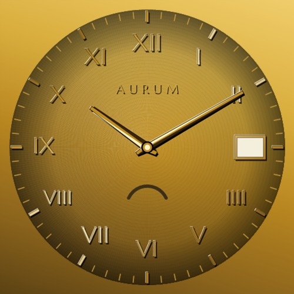
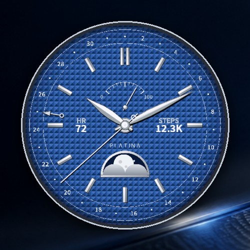
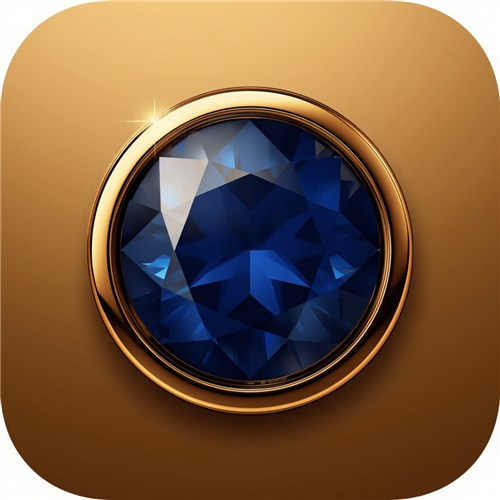
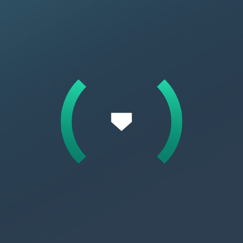
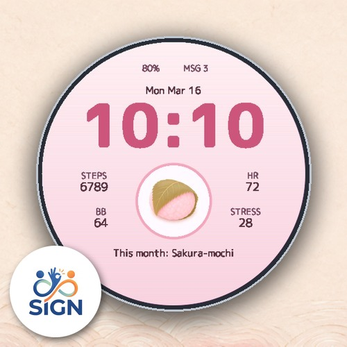
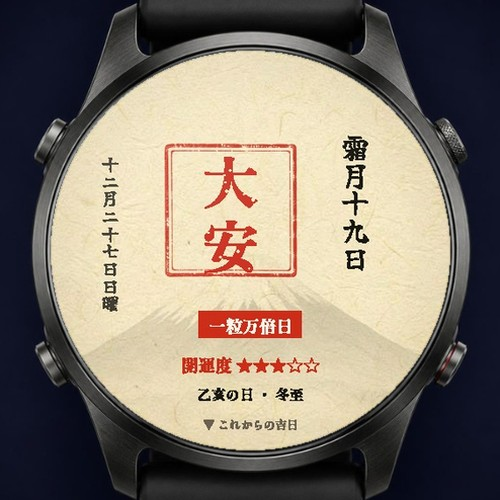
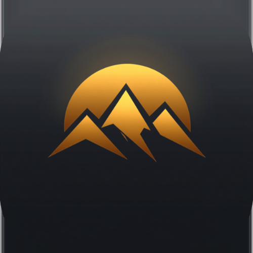

适用于Garmin的表盘・数据字段・应用一览
这里汇总了 SIGN（佐藤雄一）制作并在 Garmin Connect IQ 商店发布的、适用于 Garmin 手表的表盘、数据字段与应用（截至2026年11月26日共16款）。按类型介绍每款产品的内容、免费还是付费、能否先试用。所有产品均为个人开发者制作，并非 Garmin 官方产品。
高级指针表盘
在 Garmin 屏幕上呈现高级腕表表盘氛围的指针表盘。均可在设置中切换款式。

Aurum
金色表盘。无边框设计（屏幕上不绘制表圈），收录6种表面处理。

Platina
不使用金色、带有冷峻金属色调的指针表盘。5种款式与3种布局（Dress・Moonphase・GMT）组合出15种样式。

Empress
镶嵌宝石的计时码表风表盘，收录 Sapphire・Emerald・Ruby・Amethyst・Diamond White 5种款式。
数字表盘
大号数字时间，搭配数据或图案的表盘。

Overwatch
收录5种数据布局（Cockpit・Track・Trail・Recovery・Night），在自动模式下会随场景切换。
Sai 与 Jino
SIGN 的双胞胎角色 Sai 与 Jino 站在时间下方。早上・中午・傍晚・夜晚的天空与图案会变换，达到步数目标时两人会换成庆祝的图案。

Wagashi Pastel
每个月搭配一款日式点心（和果子），从1月的花瓣饼到12月的雪兔，背景与数字也会换成相配的柔和色彩。
日本历法的表盘与应用
在手腕上查看六曜、农历等日本历法信息的产品。吉日与潮汛都是按历法给出的参考。季节和果子表盘请见上方「数字表盘」中的 Wagashi Pastel。
吉日表盘（吉日ウォッチ）
显示六曜，以及一粒万倍日・天赦日等在历法上被视为吉日的日子的日式表盘。收录御朱印・月与夜海・江户和时计3种设计。显示语言为日文。

吉日日历（吉日カレンダー）
可在手表上一览今后180天吉日的应用，并显示今天的六曜・农历・开运度。显示语言为日文。
Tide Phase / Tide Phase Lite（潮回りウォッチ）
显示今天的日本式潮汛（大潮・中潮・小潮・长潮・若潮）与月龄的钓鱼表盘。按农历日期给出的参考，不显示潮时与潮高。
※ 潮汛是按历法给出的参考，请勿用于航行或与安全相关的判断。
数据字段与应用
添加到登山・骑行活动画面的数据字段，以及计时器应用。均分为免费版与增加项目或功能的付费 Pro 版，以独立应用发布。

Cairn
专为爬升设计的登山数据字段，将标高・累积爬升・坡度等6项数据集中在一屏。
Cairn Pro
Cairn 的付费版，增加 VAM・距登顶目标剩余・日落倒计时等，共12项数据集中一屏。
Cairn Cycle
专为速度・功率・踏频设计的骑行数据字段，6项数据集中一屏。
Cairn Cycle Pro
Cairn Cycle 的付费版，增加平均速度・平均功率与爬坡数据，共12项数据集中一屏。
Multitime
最多可同时运行3个命名计时器的计时应用。
Multitime Pro
Multitime 的升级版：最多20个计时器、每个计时器不同的振动、保存预设。
安装前请确认
- 能否在你的 Garmin 上使用，因产品而异。按机型查看适配一览
- Multitime Pro 在3个计时器以内可免费使用。其他付费产品都可以在购买前免费试用（试用时长见上方各产品）。付款由第三方服务 KiezelPay 处理，而非 Garmin（一次性买断，无月费等持续扣费）。Garmin 付费表盘的购买方法
- 也接受俱乐部・店铺・个人的适用于 Garmin 的定制表盘。查看表盘定制设计
常见问题
Q. 有免费的产品吗？
A. Cairn・Cairn Cycle・Multitime・吉日日历・Tide Phase Lite 是免费的。Multitime Pro 在3个计时器以内可免费使用。其他付费产品在试用期间（24小时、48小时或5次活动，因产品而异）可免费使用全部功能。
Q. 付费产品在哪里付款？
A. 付款由第三方服务 KiezelPay 处理，而非 Garmin。试用结束后，手表上会显示购买代码，请用手机或电脑付款。步骤见「Garmin 付费表盘的购买方法」。
Q. 在哪里确认我的 Garmin 能否使用？
A. 可在「Garmin 适配机型一览」中按机型确认可用的产品。各产品页面与 Connect IQ 商店的产品页面上也有适配机型列表。
Q. 这些是 Garmin 官方产品吗？
A. 不是。这些是 SIGN（佐藤雄一）个人制作、在 Garmin Connect IQ 商店发布的适用于 Garmin 的产品。如有疑问或问题反馈，请通过联系表单告诉我们。
Garmin、Connect IQ、fēnix、Forerunner、Venu 等是 Garmin Ltd. 或其子公司的商标。本页介绍的产品由 SIGN（佐藤雄一）制作，并非 Garmin 制作的产品。